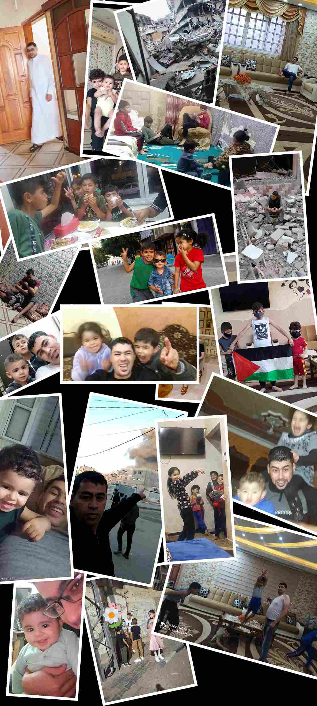
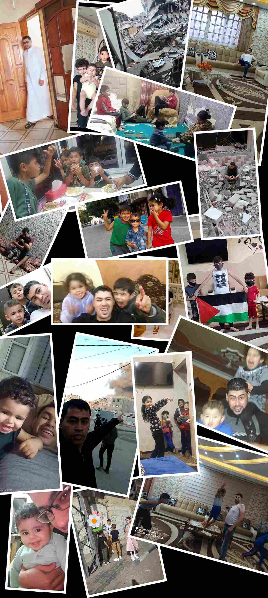

My name is Khaled. Before the war, I lived a normal life. I worked, provided for my family, and believed stability would last.
Everything changed suddenly. What took years to build disappeared in moments.
About My Family
I am a father of five children. For their safety, I made the hardest decision of my life — sending my family away while I stayed behind.
Distance is not only physical. It is emotional, psychological, and deeply painful.
للتبرع والمزيد من التفاصيل اضغط هنا
Donate & Learn More
Donate & Learn More
 
